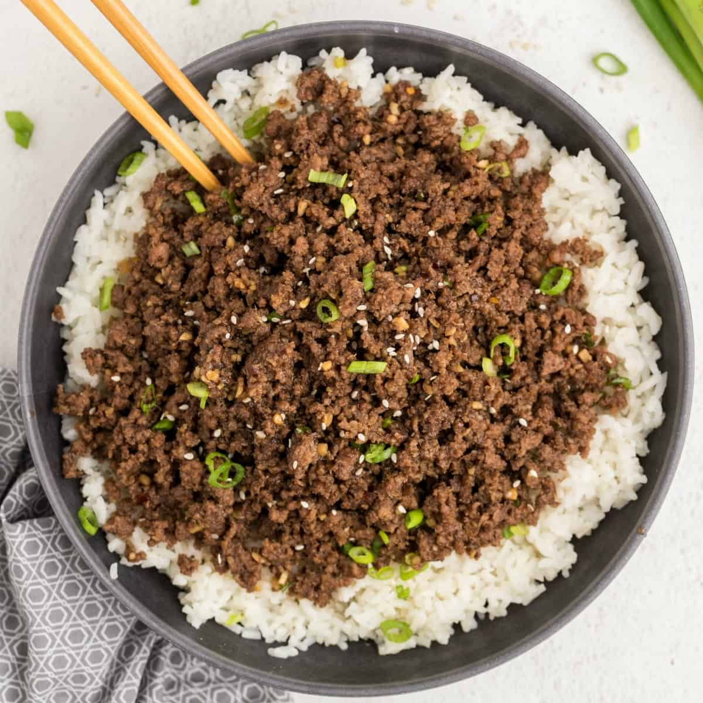

Korean Beef Bowl with Rice

Description
A korean style ground beef dish, spiced with garlic and ginger,
garnished with toasted sesame seeds and green onion, and served
over steamed white rice.
Ingredients
- 1lb 90/10 ground beef
- 1/2 cup jasmine rice
- 1/4 cup brown sugar
- 1/4 cup soy sauce
- 1 tsp sesame oil
- Sesame seeds
- 2 cloves garlic
- Ginger root (about a 1 inch cube is required)
- 3 green onion stalks
- Black pepper
- Crushed red pepper
Steps
- Measure out 3/4 cup of water, add to a saucepan,
and bring to a boil.
- As the water comes to a boil, put the rice in a
wire mesh strainer, and rinse off the starch under
cold water. Rinse rice until water comes out of the
strainer mostly clear.
- Add rice to boiling water, reduce to a simmer.
Remove from heat when no steam visibly escapes from the saucepan.
- Heat a small skillet over medium low. Add sesame seeds.
Shuffle seeds around in pan occasionally. Remove from heat when
seeds are lightly toasted.
- Peel the skin off the ginger root using a vegetable
peeler. Separate and peel the garlic cloves.
- Finely mince the peeled ginger root and garlic;
slice the green onion into thin slices.
- Add 1/4 cup brown sugar, 1/4 cup soy sauce, and the
minced garlic and ginger to a mixing bowl. Whisk to
combine, then add black pepper and crushed red pepper
to taste.
- Heat a large skillet or wok over medium-high heat.
Add ground beef to pan. Slowly break up the beef as it cooks.
- Once beef is mostly browned, reduce heat to medium, and
add the soy sauce mixture. Cook with soy sauce mixture until sauce
thickens and all the beef is coated.
- Remove beef from heat. Add toasted sesame seeds and chopped green
onion. Serve beef over rice and enjoy.